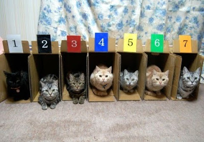
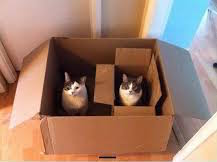

Welcome to the wide, wonderful world of hashes and arrays! In this edition of Katrina's technical blog, we'll explore the difference between the two, and answer the biggest question of all: just WTF ARE they?
The short answers: They're ways of storing data, and they're actually kind of the same.
This is an array:

Random picture with no attribution on the internet
Each kitty represents a piece of data. Each box represents the spot for the data in the array. The numbers represent the order in which the data was entered into the array. You don't have to assign the numbers, the numbers are assigned automatically. These numbers are called keys. To access the data, you call it by it's key. (At which point it will systematically ignore you, while purring in its box, but I digress.)
This is a hash:
© Platina Jolteon
You still have kitties, you still have boxes, but now you have to come up with their identifying factors yourself. Instead of the kitty on the left having a key of 1, it would have a key of your decision, in this case, purple. When you enter the data into the hash, you enter the key word with it.
Fun side note: you can have an array within an array!

Another random picture with no attribution on the internet
Why do we care about arrays?
Arrays are great ways to maneuver and manipulate multiple pieces of data at once instead of having to process each one, one at a time. If you have to brush all of your cats, you go grab one out of the box, brush it, put it back in the box then grab the next one. This is faster than chasing the little buggers all over the house, one at a time.
Why do we care about hashes?
Hashes allow us to provide a key which could be considered a more descriptive tag for the data being stored. Example: a dictionary. Each word being defined could be the key, and the definition the data being stored.
Some important notes:
- The numbering for arrays actually starts at 0, not 1.
- Computer data does not go running all over the house unless you're having a REALLY bad day.
- Hashes actually do keep track of the order you enter the data. You still need to call the data by it's assigned key, but if you tell your program to go over the data in a hash, by default it will do so in the order it was entered.
- It is possible to add two arrays together, and the second array (the one added to the first) is appended to the end of the array. So if you have an array called 'A' that equals ['a', 'b', 'c'] and another called 'B' that contains ['d', 'e', 'f'], A + B can create a third array (lets call it 'C') that equals ['a', 'b', 'c', 'd', 'e', 'f']. This matters because in array B, 'e' has the key of 1 (remember arrays start counting at 0). In array C, 'e' now has a key of 4.
- It is also possible to add two hashes together, but in Ruby, if both have a piece of data with the same key, the second key will overwrite the first one. Example: your hash called A has a piece of data 'Smith: John'. Smith is the key, John is the value. Your hash called B also has a piece of data with the key Smith. 'Smith: Jason' If you merge the two hashes, the second one overwrites the first one. If you created a third hash by merging the other two (example: C = A.merge(B)), C with have only one piece of data with the key Smith. Because B is the second one listed, it will overwrite the shared key in A, so hash C will have the piece of data 'Smith: Jason'. If you reversed it, C = B.merge(A), then C will have the data 'Smith: John'.
- While purring in cats is cute, if your computer starts making a similar noise, back up your data, and call an exorcist.